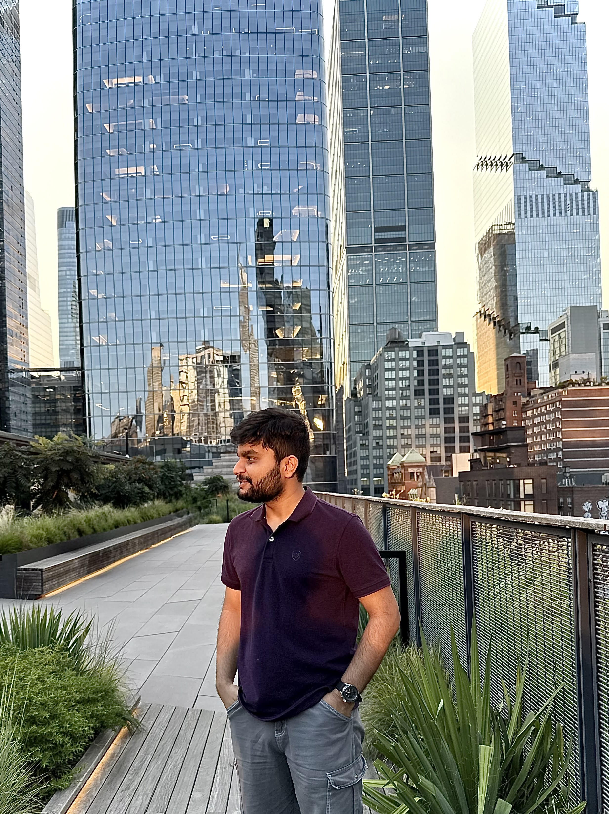
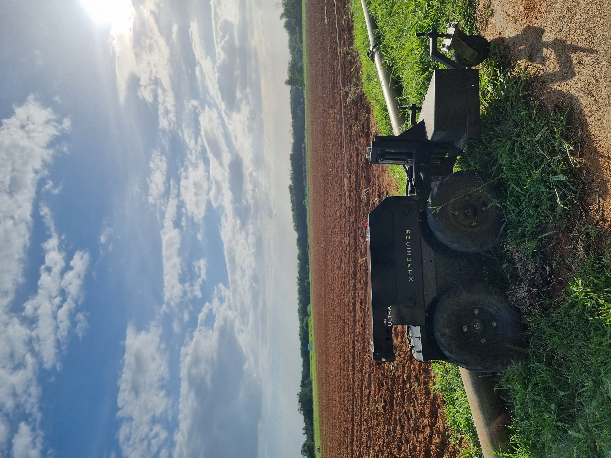
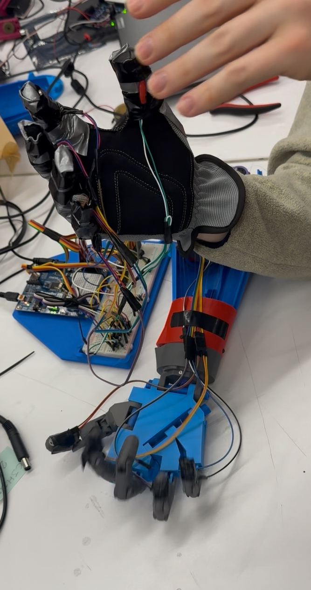
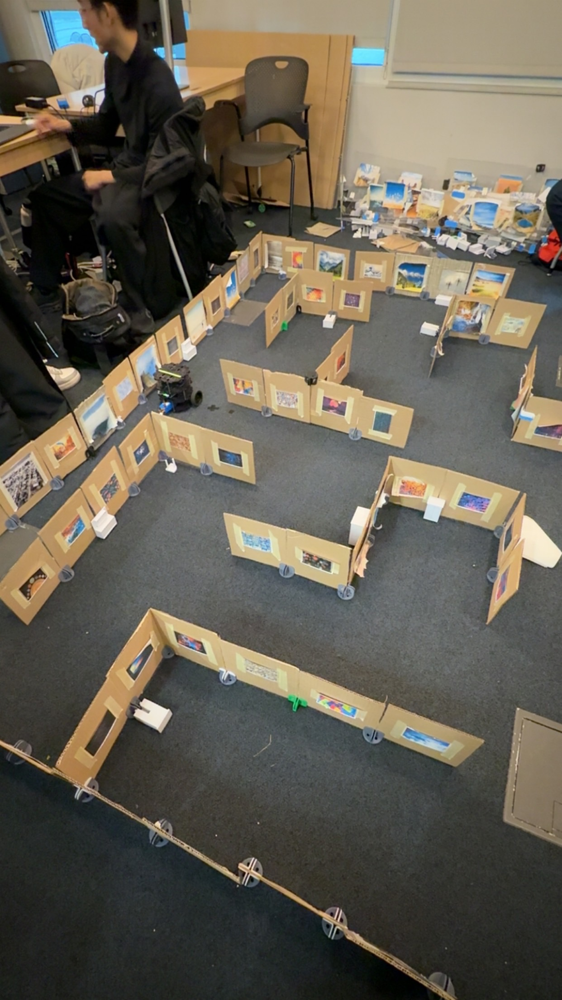
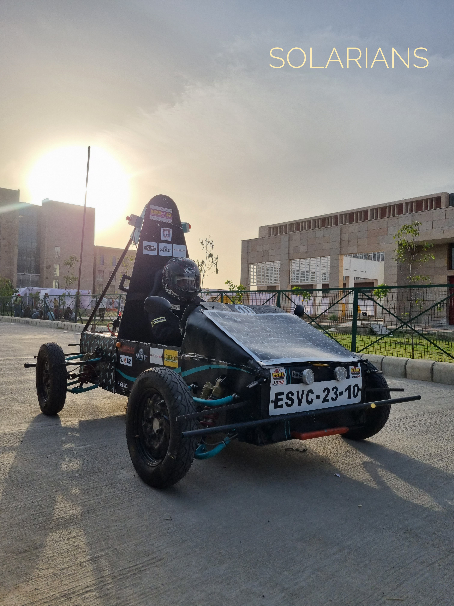

|
Vivekananda Swamy Mattam I'm a Master's student in Mechatronics and Robotics at NYU Tandon School of Engineering. Growing up in rural India, I saw firsthand the challenges of agriculture and inefficient processes. When I visited my grandfather's workplace at Mahindra and watched robots handle tasks that once required intense human labor, something clicked. That's when I realized robotics wasn't just about building cool machines but about creating systems that genuinely solve problems and reduce human burden. NYU has been an incredible learning experience. I've had the chance to work on a Bell Labs funded project building high-speed navigation systems, train quadruped robots with reinforcement learning in Isaac Lab, and work on visual SLAM and perception for the VIP Self-Drive project. Before coming here, I interned at Xmachines, an agricultural robotics startup, where I worked on sensor fusion and motion planning. Right now, I'm looking for internship/full-time opportunities in robotics, autonomous systems, or applied AI. I want to work on projects where the technology actually matters, where robots are solving real problems for real people. |
 |
{kind=link}
Experience |

|
Course Assistant - Autonomous Mobile Robots
NYU Tandon School of Engineering 2024 - Present Course Materials Built all lecture materials for a graduate robotics course from scratch. Took the professor's raw audio recordings and handwritten notes and transformed them into polished lecture slides with custom diagrams and visualizations. A great exercise in breaking down complex robotics concepts and presenting them in ways that actually make sense to students. |
|

|
Robotics Engineering Intern
Xmachines - Agricultural Robotics Startup 2024 Worked on autonomous systems for agricultural robots handling crop monitoring and harvesting. Focused on sensor integration and optimization using MPU-6050 for motion tracking and Arducam IMX219 for image processing on Ubuntu 22.04. Developed ROS-based motion planning solutions for dynamic farm environments with embedded systems including Jetson Orin Nano, Arduino, and ESP32. |
ProjectsI'm interested in autonomous navigation, visual SLAM, robot perception, and deploying learning-based systems on real robots. |

|
High-Speed Autonomous Navigation in Narrow Corridors
Vivekananda Swamy Mattam NYU, Bell Labs Funded, 2024-Present Developed a ROS 2-based navigation framework for an Ackermann-steered RC car operating in corridors as narrow as 1.2 meters. Built a complete simulation environment in Gazebo Ignition with a custom URDF model addressing the four-bar linkage limitation inherent to Ackermann steering. Implemented a camera-LiDAR fusion perception system with optical flow-based motion tracking and ego-motion compensation. Developed a racing line optimization algorithm that utilizes 92% of corridor width through outside-inside-outside cornering geometry. Integrated the full stack with Nav2, SLAM Toolbox, EKF localization, and MPPI control, creating a 60+ node architecture. Tech: ROS 2 Humble, Gazebo Ignition, Nav2, SLAM Toolbox, OpenCV, Python, C++ |

|
Reinforcement Learning for Quadruped Locomotion
Vivekananda Swamy Mattam NYU, 2024 Trained a Unitree Go2 robot to walk using PPO in NVIDIA Isaac Lab. Implemented reward shaping for smooth actions, gait coordination (Raibert heuristic), and body stability. Added an actuator friction model with domain randomization for sim-to-real transfer. The final policy tracks velocity commands at nearly 2x the baseline targets on both flat and rough terrain. Tools: Isaac Lab, PyTorch, PPO, NYU HPC |

|
Visual Navigation and Robot Perception
Vivekananda Swamy Mattam, Team Voyager ROB-GY 6203: Robot Perception, NYU Built a system that navigates a maze using only camera images, no GPS or odometry. Used CosPlace descriptors for place recognition and SuperGlue for geometric verification because matching by appearance alone kept giving false positives in similar-looking corridors. The system builds a topological graph and runs A* for planning. Separately implemented 2D mapping using visual odometry with ORB features, multi-object tracking with YOLOv11 and ByteTrack, and wrote RANSAC plane fitting and ICP point cloud alignment from scratch for KITTI data. Tech: PyTorch, CosPlace, SuperGlue, OpenCV, YOLOv11, ByteTrack, Open3D |

|
HSRN Robot - Data Center Automation
Vivekananda Swamy Mattam NYU, 2024-Present Building a joystick-controlled robot for automating data center tasks. Focus on developing perception models and multi-robot coordination using sensor fusion to help robots navigate tight spaces and understand their environment in real time. Using Corelink's C++ client with ROS for inter-robot communication, with plans to transition from manual control to full autonomy. Tech: ROS, C++, Python, Corelink, Sensor Fusion |

|
NYU VIP Self-Drive - Autonomous Navigation & Visual SLAM
Vivekananda Swamy Mattam NYU Vertically Integrated Projects Research project focused on autonomous indoor navigation using only visual SLAM—no LIDAR, just a monocular camera. Handling path planning with A* and robot localization using ORB feature matching. The challenge is making a TurtleBot3 navigate unknown spaces with minimal sensor data, relying on smart graph-based planning and exploration strategies. Preparing for the Self-Drive Exploration & Navigation Challenge. Tech: ROS 2 Humble, A*, ORB SLAM, TurtleBot3, OpenCV, C++ |
|

|
The S.L.A.P. Hand - Gesture-Controlled Robotic Hand
Vivekananda Swamy Mattam Undergraduate Major Project S.L.A.P. (Simultaneous Linked Articulation Project) started as my undergraduate major project and has evolved significantly. Began with Arduino and flex sensors for basic finger tracking, then transitioned to Propeller microcontrollers for better multi-servo control, and eventually moved to Raspberry Pi. The biggest shift came when I moved from flex sensors to vision-based manipulation using Google's Mediapipe for hand tracking, enabling more natural gesture control without wearable sensors. The system now includes haptic feedback for tactile sensing. Tech: Raspberry Pi, Arduino, Propeller, Google Mediapipe, MPU6050, Haptic Feedback |
|

|
SCARA Manipulator Control & Planning
Vivekananda Swamy Mattam Foundations of Robotics, NYU Three-phase project building progressive control systems for a 4-DOF SCARA manipulator. Implemented inverse kinematics using Jacobian methods, added real-time obstacle avoidance with Null-Space Projection, and designed dynamic control with trapezoidal velocity profiles accounting for inertia and external forces. Tech: MATLAB, Simulink, VR Visualization |

|
B.A.R.K. Door - IoT Pet Access System
Vivekananda Swamy Mattam Personal Project B.A.R.K. (Bluetooth Actuated Remote Key) Door is a smart pet door using RFID tags to recognize authorized pets and Bluetooth for manual control. Built with a BS2 microcontroller and servo mechanisms for the locking system. Currently exploring Wi-Fi integration and AI-based behavioral tracking for smarter automation. Tech: BS2, RFID, Bluetooth, IoT, Servo Mechanisms |
|

|
E.S.V.C. - Solar-Powered Electric Vehicle
Vivekananda Swamy Mattam, Team Solarians 4.0 Electric Solar Vehicle Championship Designed the chassis for our entry in the Electric Solar Vehicle Championship (competing against 60+ teams). Using CATIA V5 for CAD and ANSYS R16.2 for structural analysis, optimized an AISI 4130 steel tubular frame to balance lightweight design with racing durability while meeting ESVC safety requirements. Tech: CATIA V5, ANSYS R16.2 |
Technical Skills
Languages: Python, C++, JavaScript, TypeScript, MATLAB |
Education
M.S. Mechatronics and Robotics |
|
Template from Jon Barron. Last updated: January 2025. |